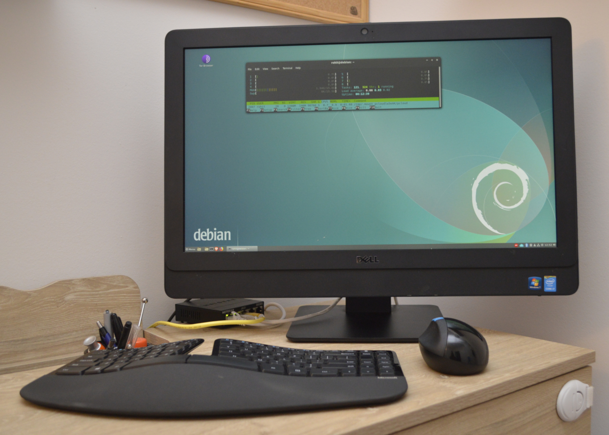

mostly text based personal site served on my home server
Thank you for visiting my website that is running on my home server (A Dell Optiplex AIO). This is more of an informal website, mostly for testing and temporary projects. Although I keep my home server running 24/7 and so far I had no issues with electricity or internet connectivity this website may go down occasionally during updates or on occasions when I am trying something, and things went wrong. My official website is https://rohitfarmer.github.io. I have intentionally made this website mostly text to be compatible with terminal-based web browsers like Lynx.
I am a computational biologist by training; however, as part of my hobby, I am also interested in topics like data science/machine learning, privacy/security/anonymity, encryption, networking, IoTs, and projects on Raspberry Pi. I also like to read, write, and travel. I often have fun projects in mind where I want to collaborate with other like-minded people, and I also like to network with people with similar interests.
None of the content on this website reflects the views of any of my past or present employers.
Contact This website is running on Debian 10 (buster) installed on an old Dell Optiplex all in one desktop with a fourth-generation Intel Core i7 CPU, 16 Gb of RAM, and a 256 Gb Adata SSD. This desktop computer has an interesting story behind it. One of my friends at WashU was using it as an external monitor because it lacked a hard disk. I am presuming that he got it as a clearance computer from an organization that took the hard disk out. And while we were shifting homes, he gave this computer to me for free thinking that it's useless.
I like Dell Optiplex machines as they are cheap, robust and I never had any issues in installing and running linux on them. They are good for home servers as they are not as loud as proper server grade systems and also not too power hungry. I also use this machine for regular desktop purposes if I am not using my laptop. It is wired to a 300 mbps broadband connection.
© 2020 Rohit Farmer